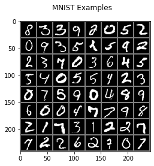
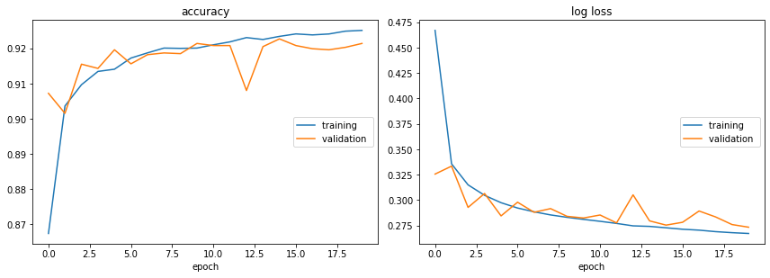
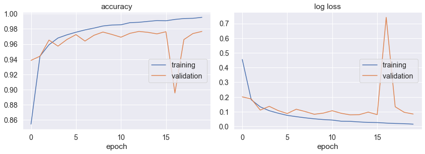
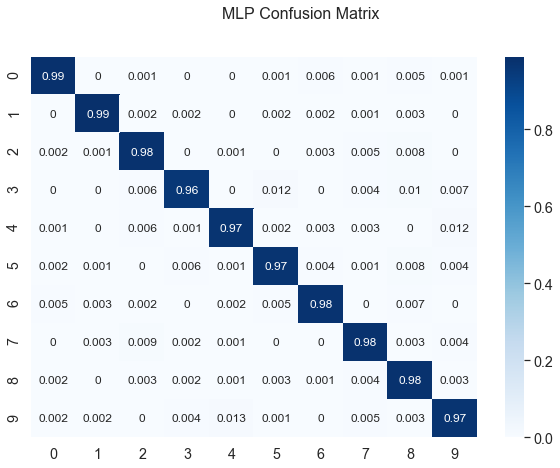
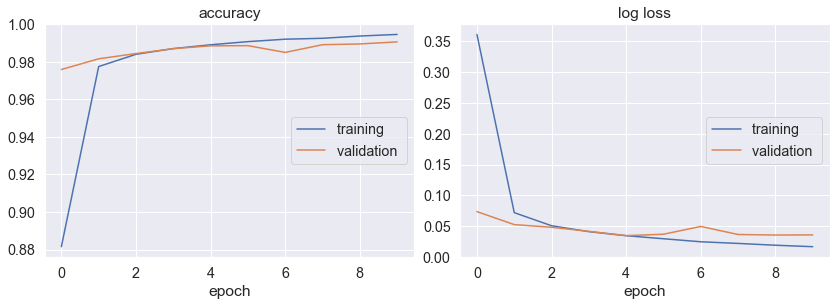
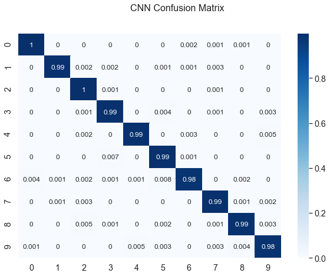

<!DOCTYPE html>

<html xmlns="http://www.w3.org/1999/xhtml">
  <head>
    <meta charset="utf-8" />
    <title>Machine Learning in PyTorch &#8212; Jason Liu</title>
    <link rel="stylesheet" href="https://cdnjs.cloudflare.com/ajax/libs/font-awesome/5.11.2/css/all.min.css" integrity="sha384-KA6wR/X5RY4zFAHpv/CnoG2UW1uogYfdnP67Uv7eULvTveboZJg0qUpmJZb5VqzN" crossorigin="anonymous">
    <link href="../_static/css/index.css" rel="stylesheet">
    <link rel="stylesheet" href="../_static/sphinx-book-theme.css" type="text/css" />
    <link rel="stylesheet" href="../_static/pygments.css" type="text/css" />
    <link rel="stylesheet" type="text/css" href="../_static/togglebutton.css" />
    <link rel="stylesheet" type="text/css" href="../_static/copybutton.css" />
    <link rel="stylesheet" type="text/css" href="../_static/mystnb.css" />
    <link rel="stylesheet" type="text/css" href="../_static/jupyter-sphinx.css" />
    <script id="documentation_options" data-url_root="../" src="../_static/documentation_options.js"></script>
    <script src="../_static/sphinx-book-theme.js"></script>
    <script src="../_static/jquery.js"></script>
    <script src="../_static/underscore.js"></script>
    <script src="../_static/doctools.js"></script>
    <script src="../_static/language_data.js"></script>
    <script src="../_static/togglebutton.js"></script>
    <script src="../_static/clipboard.min.js"></script>
    <script src="../_static/copybutton.js"></script>
    <script src="../_static/mystnb.js"></script>
    <script src="../_static/sphinx-book-theme.js"></script>
    <script >var togglebuttonSelector = '.toggle, .admonition.dropdown, .tag_hide_input div.cell_input, .tag_hide-input div.cell_input, .tag_hide_output div.cell_output, .tag_hide-output div.cell_output, .tag_hide_cell.cell, .tag_hide-cell.cell';</script>
    <script src="https://cdnjs.cloudflare.com/ajax/libs/require.js/2.3.4/require.min.js"></script>
    <script src="https://unpkg.com/@jupyter-widgets/html-manager@^0.18.0/dist/embed-amd.js"></script>
    <script async="async" src="https://cdnjs.cloudflare.com/ajax/libs/mathjax/2.7.5/latest.js?config=TeX-AMS-MML_HTMLorMML"></script>
    <link rel="index" title="Index" href="../genindex.html" />
    <link rel="search" title="Search" href="../search.html" />
    <link rel="next" title="Movie Review Semantic Analysis" href="../movie/movie.html" />
    <link rel="prev" title="When to use Logistic Regression vs Support Vector Machines vs Naive Bayes classifiers" href="mnist_sklearn.html" />

    <meta name="viewport" content="width=device-width, initial-scale=1">
    <meta name="docsearch:language" content="en">


  </head>
  <body data-spy="scroll" data-target="#bd-toc-nav" data-offset="80">
    

    <div class="container-xl">
      <div class="row">
          
<div class="col-12 col-md-3 bd-sidebar site-navigation show" id="site-navigation">
    
        <div class="navbar-brand-box">
<a class="navbar-brand text-wrap" href="../index.html">
  
  
  
  
  <h1 class="site-logo" id="site-title">Jason Liu</h1>
  
</a>
</div>

<form class="bd-search d-flex align-items-center" action="../search.html" method="get">
  <i class="icon fas fa-search"></i>
  <input type="search" class="form-control" name="q" id="search-input" placeholder="Search this book..." aria-label="Search this book..." autocomplete="off" >
</form>

<nav class="bd-links" id="bd-docs-nav" aria-label="Main navigation">
  
  <ul class="nav sidenav_l1">
<li class="navbar-special">
<p class="margin-caption">Machine Learning with MNIST</p>
</li>
  <li class="">
    <a href="mnist_sklearn.html">When to use Logistic Regression vs Support Vector Machines vs Naive Bayes classifiers</a>
  </li>
  <li class="active">
    <a href="">Machine Learning in PyTorch</a>
  </li>
<li class="navbar-special">
<p class="margin-caption">Large Movie Review Dataset</p>
</li>
  <li class="">
    <a href="../movie/movie.html">Movie Review Semantic Analysis</a>
  </li>
</ul>
</nav>

 <!-- To handle the deprecated key -->

</div>


          


          
<main class="col py-md-3 pl-md-4 bd-content overflow-auto" role="main">
    
    <div class="row topbar fixed-top container-xl">
    <div class="col-12 col-md-3 bd-topbar-whitespace site-navigation show">
    </div>
    <div class="col pl-2 topbar-main">
        
        <button id="navbar-toggler" class="navbar-toggler ml-0" type="button" data-toggle="collapse"
            data-toggle="tooltip" data-placement="bottom" data-target=".site-navigation" aria-controls="navbar-menu"
            aria-expanded="true" aria-label="Toggle navigation" aria-controls="site-navigation"
            title="Toggle navigation" data-toggle="tooltip" data-placement="left">
            <i class="fas fa-bars"></i>
            <i class="fas fa-arrow-left"></i>
            <i class="fas fa-arrow-up"></i>
        </button>
        
        <div class="dropdown-buttons-trigger">
    <button id="dropdown-buttons-trigger" class="btn btn-secondary topbarbtn" aria-label="Download this page"><i
            class="fas fa-download"></i></button>

    
    <div class="dropdown-buttons">
        <!-- ipynb file if we had a myst markdown file -->
        
        <!-- Download raw file -->
        <a class="dropdown-buttons" href="../_sources/mnist/mnist_pytorch.ipynb"><button type="button"
                class="btn btn-secondary topbarbtn" title="Download source file" data-toggle="tooltip"
                data-placement="left">.ipynb</button></a>
        <!-- Download PDF via print -->
        <button type="button" id="download-print" class="btn btn-secondary topbarbtn" title="Print to PDF"
            onClick="window.print()" data-toggle="tooltip" data-placement="left">.pdf</button>
    </div>
    
</div>
        <!-- Source interaction buttons -->

<div class="dropdown-buttons-trigger">
    <button id="dropdown-buttons-trigger" class="btn btn-secondary topbarbtn"
        aria-label="Connect with source repository"><i class="fab fa-github"></i></button>
    <div class="dropdown-buttons sourcebuttons">
        <a class="repository-button"
            href="https://github.com/jasoneliu/pessoalab"><button type="button" class="btn btn-secondary topbarbtn"
                data-toggle="tooltip" data-placement="left" title="Source repository"><i
                    class="fab fa-github"></i>repository</button></a>
        <a class="issues-button"
            href="https://github.com/jasoneliu/pessoalab/issues/new?title=Issue%20on%20page%20%2Fmnist/mnist_pytorch.html&body=Your%20issue%20content%20here."><button
                type="button" class="btn btn-secondary topbarbtn" data-toggle="tooltip" data-placement="left"
                title="Open an issue"><i class="fas fa-lightbulb"></i>open issue</button></a>
        <a class="edit-button" href="https://github.com/jasoneliu/pessoalab/edit/master/mnist/mnist_pytorch.ipynb"><button
                type="button" class="btn btn-secondary topbarbtn" data-toggle="tooltip" data-placement="left"
                title="Edit this page"><i class="fas fa-pencil-alt"></i>suggest edit</button></a>
    </div>
</div>


        <!-- Full screen (wrap in <a> to have style consistency -->
        <a class="full-screen-button"><button type="button" class="btn btn-secondary topbarbtn" data-toggle="tooltip"
                data-placement="bottom" onclick="toggleFullScreen()" title="Fullscreen mode"><i
                    class="fas fa-expand"></i></button></a>

        <!-- Launch buttons -->

    </div>
    <div class="d-none d-md-block col-md-2 bd-toc show">
<div class="tocsection onthispage pt-5 pb-3">
    <i class="fas fa-list"></i> On this page
</div>

<nav id="bd-toc-nav">
    <ul class="nav section-nav flex-column">
    
        <li class="nav-item toc-entry toc-h2">
            <a href="#logistic-regression" class="nav-link">Logistic Regression</a>
        </li>
    
        <li class="nav-item toc-entry toc-h2">
            <a href="#multilayer-perceptron" class="nav-link">Multilayer Perceptron</a>
        </li>
    
        <li class="nav-item toc-entry toc-h2">
            <a href="#convolutional-neural-network" class="nav-link">Convolutional Neural Network</a>
        </li>
    
    </ul>
</nav>


<div class="tocsection editthispage">
    <a href="https://github.com/jasoneliu/pessoalab/edit/master/mnist/mnist_pytorch.ipynb">
        <i class="fas fa-pencil-alt"></i> Edit this page
    </a>
</div>

    </div>
</div>
    <div id="main-content" class="row">
        <div class="col-12 col-md-9 pl-md-3 pr-md-0">
        
              <div>
                
  <div class="section" id="machine-learning-in-pytorch">
<h1>Machine Learning in PyTorch<a class="headerlink" href="#machine-learning-in-pytorch" title="Permalink to this headline">¶</a></h1>
<p>7/3/2020</p>
<p>PyTorch is another python machine learning library similar to scikit-learn. PyTorch is designed for deep learning, giving it more flexibility when creating neural networks.</p>
<div class="section" id="logistic-regression">
<h2>Logistic Regression<a class="headerlink" href="#logistic-regression" title="Permalink to this headline">¶</a></h2>
<p>Begin with imports:</p>
<div class="cell docutils container">
<div class="cell_input docutils container">
<div class="highlight-default notranslate"><div class="highlight"><pre><span></span><span class="kn">import</span> <span class="nn">torch</span>
<span class="kn">from</span> <span class="nn">torch</span> <span class="kn">import</span> <span class="n">nn</span><span class="p">,</span> <span class="n">optim</span>
<span class="kn">from</span> <span class="nn">torch.utils.data</span> <span class="kn">import</span> <span class="n">random_split</span>
<span class="kn">import</span> <span class="nn">torch.nn.functional</span> <span class="k">as</span> <span class="nn">F</span>
<span class="kn">import</span> <span class="nn">torchvision</span>
<span class="kn">from</span> <span class="nn">torchvision</span> <span class="kn">import</span> <span class="n">datasets</span><span class="p">,</span> <span class="n">transforms</span>
<span class="kn">from</span> <span class="nn">ray</span> <span class="kn">import</span> <span class="n">tune</span>

<span class="kn">import</span> <span class="nn">matplotlib.pyplot</span> <span class="k">as</span> <span class="nn">plt</span>
<span class="kn">from</span> <span class="nn">IPython.display</span> <span class="kn">import</span> <span class="n">set_matplotlib_formats</span>
<span class="n">set_matplotlib_formats</span><span class="p">(</span><span class="s1">&#39;png&#39;</span><span class="p">)</span>
<span class="kn">import</span> <span class="nn">seaborn</span> <span class="k">as</span> <span class="nn">sn</span>
<span class="kn">import</span> <span class="nn">pandas</span> <span class="k">as</span> <span class="nn">pd</span>
<span class="kn">import</span> <span class="nn">numpy</span> <span class="k">as</span> <span class="nn">np</span>
<span class="kn">import</span> <span class="nn">time</span>
<span class="kn">from</span> <span class="nn">livelossplot</span> <span class="kn">import</span> <span class="n">PlotLosses</span>
</pre></div>
</div>
</div>
</div>
<p>The full MNIST dataset is split into training (42000), validation (18000), and test (10000) sets. A batch size of 64 is also defined for stochastic gradient descent:</p>
<div class="cell docutils container">
<div class="cell_input docutils container">
<div class="highlight-default notranslate"><div class="highlight"><pre><span></span><span class="n">torch</span><span class="o">.</span><span class="n">manual_seed</span><span class="p">(</span><span class="mi">0</span><span class="p">)</span>
<span class="n">torch</span><span class="o">.</span><span class="n">backends</span><span class="o">.</span><span class="n">cudnn</span><span class="o">.</span><span class="n">deterministic</span> <span class="o">=</span> <span class="kc">True</span>
<span class="n">torch</span><span class="o">.</span><span class="n">backends</span><span class="o">.</span><span class="n">cudnn</span><span class="o">.</span><span class="n">benchmark</span> <span class="o">=</span> <span class="kc">False</span>

<span class="n">transform</span> <span class="o">=</span> <span class="n">transforms</span><span class="o">.</span><span class="n">Compose</span><span class="p">([</span><span class="n">transforms</span><span class="o">.</span><span class="n">ToTensor</span><span class="p">(),</span><span class="n">transforms</span><span class="o">.</span><span class="n">Normalize</span><span class="p">((</span><span class="mf">0.5</span><span class="p">,),(</span><span class="mf">0.5</span><span class="p">,))])</span> <span class="c1">#[-1,1]</span>
<span class="n">trainset</span> <span class="o">=</span> <span class="n">datasets</span><span class="o">.</span><span class="n">MNIST</span><span class="p">(</span><span class="n">root</span><span class="o">=</span><span class="s1">&#39;./data&#39;</span><span class="p">,</span> <span class="n">train</span><span class="o">=</span><span class="kc">True</span><span class="p">,</span> <span class="n">download</span><span class="o">=</span><span class="kc">True</span><span class="p">,</span> <span class="n">transform</span><span class="o">=</span><span class="n">transform</span><span class="p">)</span>
<span class="n">trainset</span><span class="p">,</span> <span class="n">valset</span> <span class="o">=</span> <span class="n">random_split</span><span class="p">(</span><span class="n">trainset</span><span class="p">,</span> <span class="p">[</span><span class="mi">42000</span><span class="p">,</span><span class="mi">18000</span><span class="p">])</span>
<span class="n">testset</span> <span class="o">=</span> <span class="n">datasets</span><span class="o">.</span><span class="n">MNIST</span><span class="p">(</span><span class="n">root</span><span class="o">=</span><span class="s1">&#39;./data&#39;</span><span class="p">,</span> <span class="n">train</span><span class="o">=</span><span class="kc">False</span><span class="p">,</span> <span class="n">download</span><span class="o">=</span><span class="kc">True</span><span class="p">,</span> <span class="n">transform</span><span class="o">=</span><span class="n">transform</span><span class="p">)</span>
<span class="n">trainloader</span> <span class="o">=</span> <span class="n">torch</span><span class="o">.</span><span class="n">utils</span><span class="o">.</span><span class="n">data</span><span class="o">.</span><span class="n">DataLoader</span><span class="p">(</span><span class="n">trainset</span><span class="p">,</span> <span class="n">batch_size</span><span class="o">=</span><span class="mi">64</span><span class="p">,</span> <span class="n">shuffle</span><span class="o">=</span><span class="kc">True</span><span class="p">,</span> <span class="n">num_workers</span><span class="o">=</span><span class="mi">2</span><span class="p">)</span>
<span class="n">valloader</span> <span class="o">=</span> <span class="n">torch</span><span class="o">.</span><span class="n">utils</span><span class="o">.</span><span class="n">data</span><span class="o">.</span><span class="n">DataLoader</span><span class="p">(</span><span class="n">valset</span><span class="p">,</span> <span class="n">batch_size</span><span class="o">=</span><span class="mi">64</span><span class="p">,</span> <span class="n">shuffle</span><span class="o">=</span><span class="kc">True</span><span class="p">,</span> <span class="n">num_workers</span><span class="o">=</span><span class="mi">2</span><span class="p">)</span>
<span class="n">testloader</span> <span class="o">=</span> <span class="n">torch</span><span class="o">.</span><span class="n">utils</span><span class="o">.</span><span class="n">data</span><span class="o">.</span><span class="n">DataLoader</span><span class="p">(</span><span class="n">testset</span><span class="p">,</span> <span class="n">batch_size</span><span class="o">=</span><span class="mi">64</span><span class="p">,</span> <span class="n">shuffle</span><span class="o">=</span><span class="kc">False</span><span class="p">,</span> <span class="n">num_workers</span><span class="o">=</span><span class="mi">2</span><span class="p">)</span>
<span class="n">dataloaders</span> <span class="o">=</span> <span class="p">{</span><span class="s1">&#39;train&#39;</span><span class="p">:</span><span class="n">trainloader</span><span class="p">,</span> <span class="s1">&#39;validation&#39;</span><span class="p">:</span><span class="n">valloader</span><span class="p">}</span>
</pre></div>
</div>
</div>
</div>
<p>Let’s show all digits in a single batch:</p>
<div class="cell docutils container">
<div class="cell_input docutils container">
<div class="highlight-default notranslate"><div class="highlight"><pre><span></span><span class="k">def</span> <span class="nf">imshow</span><span class="p">(</span><span class="n">img</span><span class="p">):</span>
    <span class="n">img</span> <span class="o">=</span> <span class="n">img</span> <span class="o">/</span> <span class="mi">2</span> <span class="o">+</span> <span class="mf">0.5</span> <span class="c1">#unnormalize</span>
    <span class="n">npimg</span> <span class="o">=</span> <span class="n">img</span><span class="o">.</span><span class="n">numpy</span><span class="p">()</span>
    <span class="n">plt</span><span class="o">.</span><span class="n">imshow</span><span class="p">(</span><span class="n">np</span><span class="o">.</span><span class="n">transpose</span><span class="p">(</span><span class="n">npimg</span><span class="p">,</span> <span class="p">(</span><span class="mi">1</span><span class="p">,</span> <span class="mi">2</span><span class="p">,</span> <span class="mi">0</span><span class="p">)))</span>
    <span class="n">plt</span><span class="o">.</span><span class="n">show</span><span class="p">()</span>

<span class="n">dataiter</span> <span class="o">=</span> <span class="nb">iter</span><span class="p">(</span><span class="n">trainloader</span><span class="p">)</span>
<span class="n">images</span><span class="p">,</span> <span class="n">labels</span> <span class="o">=</span> <span class="n">dataiter</span><span class="o">.</span><span class="n">next</span><span class="p">()</span>
<span class="n">plt</span><span class="o">.</span><span class="n">suptitle</span><span class="p">(</span><span class="s1">&#39;MNIST Examples&#39;</span><span class="p">)</span>
<span class="n">imshow</span><span class="p">(</span><span class="n">torchvision</span><span class="o">.</span><span class="n">utils</span><span class="o">.</span><span class="n">make_grid</span><span class="p">(</span><span class="n">images</span><span class="p">))</span>
</pre></div>
</div>
</div>
<div class="cell_output docutils container">

</div>
</div>
<p>We define logistic regression as a two-layer neural net (784 input nodes for pixels, 10 output nodes for digit classification):</p>
<div class="cell docutils container">
<div class="cell_input docutils container">
<div class="highlight-default notranslate"><div class="highlight"><pre><span></span><span class="k">class</span> <span class="nc">LogReg</span><span class="p">(</span><span class="n">nn</span><span class="o">.</span><span class="n">Module</span><span class="p">):</span>
    <span class="k">def</span> <span class="fm">__init__</span><span class="p">(</span><span class="bp">self</span><span class="p">):</span>
        <span class="nb">super</span><span class="p">(</span><span class="n">LogReg</span><span class="p">,</span> <span class="bp">self</span><span class="p">)</span><span class="o">.</span><span class="fm">__init__</span><span class="p">()</span>
        <span class="bp">self</span><span class="o">.</span><span class="n">linear</span> <span class="o">=</span> <span class="n">nn</span><span class="o">.</span><span class="n">Linear</span><span class="p">(</span><span class="mi">784</span><span class="p">,</span> <span class="mi">10</span><span class="p">)</span>

    <span class="k">def</span> <span class="nf">forward</span><span class="p">(</span><span class="bp">self</span><span class="p">,</span> <span class="n">x</span><span class="p">):</span>
        <span class="n">out</span> <span class="o">=</span> <span class="bp">self</span><span class="o">.</span><span class="n">linear</span><span class="p">(</span><span class="n">x</span><span class="p">)</span>
        <span class="k">return</span> <span class="n">out</span>
</pre></div>
</div>
</div>
</div>
<p>Use a grid search to optimize learning rate:</p>
<div class="cell docutils container">
<div class="cell_input docutils container">
<div class="highlight-default notranslate"><div class="highlight"><pre><span></span><span class="k">def</span> <span class="nf">trainable_logreg</span><span class="p">(</span><span class="n">config</span><span class="p">):</span>
    <span class="n">device</span> <span class="o">=</span> <span class="n">torch</span><span class="o">.</span><span class="n">device</span><span class="p">(</span><span class="s1">&#39;cuda:0&#39;</span> <span class="k">if</span> <span class="n">torch</span><span class="o">.</span><span class="n">cuda</span><span class="o">.</span><span class="n">is_available</span><span class="p">()</span> <span class="k">else</span> <span class="s1">&#39;cpu&#39;</span><span class="p">)</span>
    
    <span class="n">model</span> <span class="o">=</span> <span class="n">LogReg</span><span class="p">()</span>
    <span class="n">criterion</span> <span class="o">=</span> <span class="n">nn</span><span class="o">.</span><span class="n">CrossEntropyLoss</span><span class="p">()</span>
    <span class="n">optimizer</span> <span class="o">=</span> <span class="n">optim</span><span class="o">.</span><span class="n">SGD</span><span class="p">(</span><span class="n">model</span><span class="o">.</span><span class="n">parameters</span><span class="p">(),</span> <span class="n">lr</span><span class="o">=</span><span class="n">config</span><span class="p">[</span><span class="s2">&quot;lr&quot;</span><span class="p">])</span>
    <span class="k">for</span> <span class="n">epoch</span> <span class="ow">in</span> <span class="nb">range</span><span class="p">(</span><span class="mi">10</span><span class="p">):</span>
        <span class="n">model</span><span class="o">.</span><span class="n">train</span><span class="p">()</span>
        <span class="n">running_loss</span> <span class="o">=</span> <span class="mf">0.0</span>

        <span class="k">for</span> <span class="n">inputs</span><span class="p">,</span> <span class="n">labels</span> <span class="ow">in</span> <span class="n">trainloader</span><span class="p">:</span>
            <span class="n">inputs</span> <span class="o">=</span> <span class="n">inputs</span><span class="o">.</span><span class="n">view</span><span class="p">(</span><span class="n">inputs</span><span class="o">.</span><span class="n">shape</span><span class="p">[</span><span class="mi">0</span><span class="p">],</span> <span class="o">-</span><span class="mi">1</span><span class="p">)</span>
            <span class="n">inputs</span> <span class="o">=</span> <span class="n">inputs</span><span class="o">.</span><span class="n">to</span><span class="p">(</span><span class="n">device</span><span class="p">)</span>
            <span class="n">labels</span> <span class="o">=</span> <span class="n">labels</span><span class="o">.</span><span class="n">to</span><span class="p">(</span><span class="n">device</span><span class="p">)</span>

            <span class="n">optimizer</span><span class="o">.</span><span class="n">zero_grad</span><span class="p">()</span>
            <span class="n">output</span> <span class="o">=</span> <span class="n">model</span><span class="p">(</span><span class="n">inputs</span><span class="p">)</span>
            <span class="n">loss</span> <span class="o">=</span> <span class="n">criterion</span><span class="p">(</span><span class="n">output</span><span class="p">,</span> <span class="n">labels</span><span class="p">)</span>
            <span class="n">loss</span><span class="o">.</span><span class="n">backward</span><span class="p">()</span>
            <span class="n">optimizer</span><span class="o">.</span><span class="n">step</span><span class="p">()</span>
            <span class="n">running_loss</span> <span class="o">+=</span> <span class="n">loss</span><span class="o">.</span><span class="n">detach</span><span class="p">()</span> <span class="o">*</span> <span class="n">inputs</span><span class="o">.</span><span class="n">size</span><span class="p">(</span><span class="mi">0</span><span class="p">)</span>
            
        <span class="n">tune</span><span class="o">.</span><span class="n">report</span><span class="p">(</span><span class="n">mean_loss</span><span class="o">=</span><span class="n">running_loss</span><span class="o">/</span><span class="nb">len</span><span class="p">(</span><span class="n">trainloader</span><span class="o">.</span><span class="n">dataset</span><span class="p">))</span>

<span class="n">tune</span><span class="o">.</span><span class="n">run</span><span class="p">(</span><span class="n">trainable_logreg</span><span class="p">,</span> <span class="n">config</span><span class="o">=</span><span class="p">{</span><span class="s2">&quot;lr&quot;</span><span class="p">:</span> <span class="n">tune</span><span class="o">.</span><span class="n">grid_search</span><span class="p">([</span><span class="mf">0.01</span><span class="p">,</span> <span class="mf">0.03</span><span class="p">,</span> <span class="mf">0.1</span><span class="p">])},</span> <span class="n">verbose</span><span class="o">=</span><span class="mi">1</span><span class="p">)</span>
</pre></div>
</div>
</div>
<div class="cell_output docutils container">
<div class="output text_html">== Status ==<br>Memory usage on this node: 8.6/23.9 GiB<br>Using FIFO scheduling algorithm.<br>Resources requested: 0/8 CPUs, 0/0 GPUs, 0.0/9.77 GiB heap, 0.0/3.37 GiB objects<br>Result logdir: C:\Users\jl208\ray_results\trainable_logreg<br>Number of trials: 3 (3 TERMINATED)<br><table>
<thead>
<tr><th>Trial name                  </th><th>status    </th><th>loc  </th><th style="text-align: right;">  lr</th><th style="text-align: right;">    loss</th><th style="text-align: right;">  iter</th><th style="text-align: right;">  total time (s)</th></tr>
</thead>
<tbody>
<tr><td>trainable_logreg_4bda0_00000</td><td>TERMINATED</td><td>     </td><td style="text-align: right;">0.01</td><td style="text-align: right;">0.305648</td><td style="text-align: right;">    10</td><td style="text-align: right;">         172.208</td></tr>
<tr><td>trainable_logreg_4bda0_00001</td><td>TERMINATED</td><td>     </td><td style="text-align: right;">0.03</td><td style="text-align: right;">0.282862</td><td style="text-align: right;">    10</td><td style="text-align: right;">         170.787</td></tr>
<tr><td>trainable_logreg_4bda0_00002</td><td>TERMINATED</td><td>     </td><td style="text-align: right;">0.1 </td><td style="text-align: right;">0.318506</td><td style="text-align: right;">    10</td><td style="text-align: right;">         172.697</td></tr>
</tbody>
</table><br><br></div><div class="output text_plain highlight-none notranslate"><div class="highlight"><pre><span></span>&lt;ray.tune.analysis.experiment_analysis.ExperimentAnalysis at 0x19951a446c8&gt;
</pre></div>
</div>
</div>
</div>
<p>Train the model using stochastic gradient descent. To evaluate the classifier’s capabilities, we can we plot the accuracy and loss for training and validation sets as functions of the number of training epochs. After training, we can evaluate the model with the test set:</p>
<div class="cell docutils container">
<div class="cell_input docutils container">
<div class="highlight-default notranslate"><div class="highlight"><pre><span></span><span class="k">def</span> <span class="nf">train_model</span><span class="p">(</span><span class="n">model</span><span class="p">,</span> <span class="n">criterion</span><span class="p">,</span> <span class="n">optimizer</span><span class="p">,</span> <span class="n">num_epochs</span><span class="p">,</span> <span class="n">reshape</span><span class="p">,</span> <span class="n">path</span><span class="p">):</span>
    <span class="n">time_start</span> <span class="o">=</span> <span class="n">time</span><span class="o">.</span><span class="n">clock</span><span class="p">()</span>
    <span class="n">best_val_loss</span> <span class="o">=</span> <span class="nb">float</span><span class="p">(</span><span class="s1">&#39;inf&#39;</span><span class="p">)</span>
    <span class="n">device</span> <span class="o">=</span> <span class="n">torch</span><span class="o">.</span><span class="n">device</span><span class="p">(</span><span class="s1">&#39;cuda:0&#39;</span> <span class="k">if</span> <span class="n">torch</span><span class="o">.</span><span class="n">cuda</span><span class="o">.</span><span class="n">is_available</span><span class="p">()</span> <span class="k">else</span> <span class="s1">&#39;cpu&#39;</span><span class="p">)</span>

    <span class="n">liveloss</span> <span class="o">=</span> <span class="n">PlotLosses</span><span class="p">()</span>
    <span class="n">model</span> <span class="o">=</span> <span class="n">model</span><span class="o">.</span><span class="n">to</span><span class="p">(</span><span class="n">device</span><span class="p">)</span>
    
    <span class="k">for</span> <span class="n">epoch</span> <span class="ow">in</span> <span class="nb">range</span><span class="p">(</span><span class="n">num_epochs</span><span class="p">):</span>
        <span class="n">logs</span> <span class="o">=</span> <span class="p">{}</span>
        <span class="k">for</span> <span class="n">phase</span> <span class="ow">in</span> <span class="p">[</span><span class="s1">&#39;train&#39;</span><span class="p">,</span> <span class="s1">&#39;validation&#39;</span><span class="p">]:</span>
            <span class="k">if</span> <span class="n">phase</span> <span class="o">==</span> <span class="s1">&#39;train&#39;</span><span class="p">:</span>
                <span class="n">model</span><span class="o">.</span><span class="n">train</span><span class="p">()</span>
            <span class="k">else</span><span class="p">:</span>
                <span class="n">model</span><span class="o">.</span><span class="n">eval</span><span class="p">()</span>

            <span class="n">running_loss</span> <span class="o">=</span> <span class="mf">0.0</span>
            <span class="n">running_corrects</span> <span class="o">=</span> <span class="mi">0</span>

            <span class="k">for</span> <span class="n">inputs</span><span class="p">,</span> <span class="n">labels</span> <span class="ow">in</span> <span class="n">dataloaders</span><span class="p">[</span><span class="n">phase</span><span class="p">]:</span>
                <span class="k">if</span> <span class="n">reshape</span><span class="p">:</span>
                    <span class="n">inputs</span> <span class="o">=</span> <span class="n">inputs</span><span class="o">.</span><span class="n">view</span><span class="p">(</span><span class="n">inputs</span><span class="o">.</span><span class="n">shape</span><span class="p">[</span><span class="mi">0</span><span class="p">],</span><span class="o">-</span><span class="mi">1</span><span class="p">)</span>
                <span class="n">inputs</span> <span class="o">=</span> <span class="n">inputs</span><span class="o">.</span><span class="n">to</span><span class="p">(</span><span class="n">device</span><span class="p">)</span>
                <span class="n">labels</span> <span class="o">=</span> <span class="n">labels</span><span class="o">.</span><span class="n">to</span><span class="p">(</span><span class="n">device</span><span class="p">)</span>

                <span class="n">outputs</span> <span class="o">=</span> <span class="n">model</span><span class="p">(</span><span class="n">inputs</span><span class="p">)</span>
                <span class="n">loss</span> <span class="o">=</span> <span class="n">criterion</span><span class="p">(</span><span class="n">outputs</span><span class="p">,</span> <span class="n">labels</span><span class="p">)</span>

                <span class="k">if</span> <span class="n">phase</span> <span class="o">==</span> <span class="s1">&#39;train&#39;</span><span class="p">:</span>
                    <span class="n">optimizer</span><span class="o">.</span><span class="n">zero_grad</span><span class="p">()</span>
                    <span class="n">loss</span><span class="o">.</span><span class="n">backward</span><span class="p">()</span>
                    <span class="n">optimizer</span><span class="o">.</span><span class="n">step</span><span class="p">()</span>

                <span class="n">_</span><span class="p">,</span> <span class="n">preds</span> <span class="o">=</span> <span class="n">torch</span><span class="o">.</span><span class="n">max</span><span class="p">(</span><span class="n">outputs</span><span class="p">,</span> <span class="mi">1</span><span class="p">)</span>
                <span class="n">running_loss</span> <span class="o">+=</span> <span class="n">loss</span><span class="o">.</span><span class="n">detach</span><span class="p">()</span> <span class="o">*</span> <span class="n">inputs</span><span class="o">.</span><span class="n">size</span><span class="p">(</span><span class="mi">0</span><span class="p">)</span>
                <span class="n">running_corrects</span> <span class="o">+=</span> <span class="n">torch</span><span class="o">.</span><span class="n">sum</span><span class="p">(</span><span class="n">preds</span> <span class="o">==</span> <span class="n">labels</span><span class="o">.</span><span class="n">data</span><span class="p">)</span>

            <span class="n">epoch_loss</span> <span class="o">=</span> <span class="n">running_loss</span> <span class="o">/</span> <span class="nb">len</span><span class="p">(</span><span class="n">dataloaders</span><span class="p">[</span><span class="n">phase</span><span class="p">]</span><span class="o">.</span><span class="n">dataset</span><span class="p">)</span>
            <span class="n">epoch_acc</span> <span class="o">=</span> <span class="n">running_corrects</span><span class="o">.</span><span class="n">float</span><span class="p">()</span> <span class="o">/</span> <span class="nb">len</span><span class="p">(</span><span class="n">dataloaders</span><span class="p">[</span><span class="n">phase</span><span class="p">]</span><span class="o">.</span><span class="n">dataset</span><span class="p">)</span>

            <span class="n">prefix</span> <span class="o">=</span> <span class="s1">&#39;&#39;</span>
            <span class="k">if</span> <span class="n">phase</span> <span class="o">==</span> <span class="s1">&#39;validation&#39;</span><span class="p">:</span>
                <span class="n">prefix</span> <span class="o">=</span> <span class="s1">&#39;val_&#39;</span>
                <span class="k">if</span> <span class="n">epoch_loss</span> <span class="o">&lt;</span> <span class="n">best_val_loss</span><span class="p">:</span>
                    <span class="n">best_val_loss</span> <span class="o">=</span> <span class="n">epoch_loss</span>
                    <span class="n">torch</span><span class="o">.</span><span class="n">save</span><span class="p">(</span><span class="n">model</span><span class="p">,</span> <span class="n">path</span><span class="p">)</span>

            <span class="n">logs</span><span class="p">[</span><span class="n">prefix</span> <span class="o">+</span> <span class="s1">&#39;log loss&#39;</span><span class="p">]</span> <span class="o">=</span> <span class="n">epoch_loss</span><span class="o">.</span><span class="n">item</span><span class="p">()</span>
            <span class="n">logs</span><span class="p">[</span><span class="n">prefix</span> <span class="o">+</span> <span class="s1">&#39;accuracy&#39;</span><span class="p">]</span> <span class="o">=</span> <span class="n">epoch_acc</span><span class="o">.</span><span class="n">item</span><span class="p">()</span>
        
        <span class="n">liveloss</span><span class="o">.</span><span class="n">update</span><span class="p">(</span><span class="n">logs</span><span class="p">)</span>
        <span class="n">liveloss</span><span class="o">.</span><span class="n">send</span><span class="p">()</span>
    
    <span class="c1"># evaluating best model on test set</span>
    <span class="n">model</span> <span class="o">=</span> <span class="n">torch</span><span class="o">.</span><span class="n">load</span><span class="p">(</span><span class="n">path</span><span class="p">)</span>
    <span class="n">test_loss</span> <span class="o">=</span> <span class="mf">0.0</span>
    <span class="n">test_corrects</span> <span class="o">=</span> <span class="mi">0</span>
    <span class="k">for</span> <span class="n">inputs</span><span class="p">,</span> <span class="n">labels</span> <span class="ow">in</span> <span class="n">testloader</span><span class="p">:</span>
        <span class="k">if</span> <span class="n">reshape</span><span class="p">:</span>
            <span class="n">inputs</span> <span class="o">=</span> <span class="n">inputs</span><span class="o">.</span><span class="n">view</span><span class="p">(</span><span class="n">inputs</span><span class="o">.</span><span class="n">shape</span><span class="p">[</span><span class="mi">0</span><span class="p">],</span><span class="o">-</span><span class="mi">1</span><span class="p">)</span>
        <span class="n">inputs</span> <span class="o">=</span> <span class="n">inputs</span><span class="o">.</span><span class="n">to</span><span class="p">(</span><span class="n">device</span><span class="p">)</span>
        <span class="n">labels</span> <span class="o">=</span> <span class="n">labels</span><span class="o">.</span><span class="n">to</span><span class="p">(</span><span class="n">device</span><span class="p">)</span>
        <span class="n">outputs</span> <span class="o">=</span> <span class="n">model</span><span class="p">(</span><span class="n">inputs</span><span class="p">)</span>
        <span class="n">loss</span> <span class="o">=</span> <span class="n">criterion</span><span class="p">(</span><span class="n">outputs</span><span class="p">,</span> <span class="n">labels</span><span class="p">)</span>

        <span class="n">_</span><span class="p">,</span> <span class="n">preds</span> <span class="o">=</span> <span class="n">torch</span><span class="o">.</span><span class="n">max</span><span class="p">(</span><span class="n">outputs</span><span class="p">,</span> <span class="mi">1</span><span class="p">)</span>
        <span class="n">test_loss</span> <span class="o">+=</span> <span class="n">loss</span><span class="o">.</span><span class="n">detach</span><span class="p">()</span> <span class="o">*</span> <span class="n">inputs</span><span class="o">.</span><span class="n">size</span><span class="p">(</span><span class="mi">0</span><span class="p">)</span>
        <span class="n">test_corrects</span> <span class="o">+=</span> <span class="n">torch</span><span class="o">.</span><span class="n">sum</span><span class="p">(</span><span class="n">preds</span> <span class="o">==</span> <span class="n">labels</span><span class="o">.</span><span class="n">data</span><span class="p">)</span>

    <span class="n">test_loss</span> <span class="o">=</span> <span class="n">test_loss</span> <span class="o">/</span> <span class="nb">len</span><span class="p">(</span><span class="n">testloader</span><span class="o">.</span><span class="n">dataset</span><span class="p">)</span>
    <span class="n">test_acc</span> <span class="o">=</span> <span class="n">test_corrects</span><span class="o">.</span><span class="n">float</span><span class="p">()</span> <span class="o">/</span> <span class="nb">len</span><span class="p">(</span><span class="n">testloader</span><span class="o">.</span><span class="n">dataset</span><span class="p">)</span>

    <span class="nb">print</span><span class="p">(</span><span class="s1">&#39;Training time: </span><span class="si">%.3f</span><span class="s1">s&#39;</span> <span class="o">%</span> <span class="nb">round</span><span class="p">(</span><span class="n">time</span><span class="o">.</span><span class="n">clock</span><span class="p">()</span><span class="o">-</span><span class="n">time_start</span><span class="p">,</span><span class="mi">3</span><span class="p">))</span>
    <span class="nb">print</span><span class="p">(</span><span class="s1">&#39;Test loss: </span><span class="si">%.3f</span><span class="s1">&#39;</span> <span class="o">%</span> <span class="n">test_loss</span><span class="p">)</span>
    <span class="nb">print</span><span class="p">(</span><span class="s1">&#39;Test accuracy: </span><span class="si">%.3f%%</span><span class="s1">&#39;</span> <span class="o">%</span> <span class="p">(</span><span class="n">test_acc</span><span class="o">*</span><span class="mi">100</span><span class="p">))</span>
</pre></div>
</div>
</div>
</div>
<div class="cell docutils container">
<div class="cell_input docutils container">
<div class="highlight-default notranslate"><div class="highlight"><pre><span></span><span class="n">model</span><span class="o">=</span><span class="n">LogReg</span><span class="p">()</span>
<span class="n">criterion</span><span class="o">=</span><span class="n">nn</span><span class="o">.</span><span class="n">CrossEntropyLoss</span><span class="p">()</span>
<span class="n">optimizer</span><span class="o">=</span><span class="n">optim</span><span class="o">.</span><span class="n">SGD</span><span class="p">(</span><span class="n">model</span><span class="o">.</span><span class="n">parameters</span><span class="p">(),</span><span class="n">lr</span><span class="o">=</span><span class="mf">0.03</span><span class="p">)</span>
<span class="n">num_epochs</span><span class="o">=</span><span class="mi">20</span>
<span class="n">train_model</span><span class="p">(</span><span class="n">model</span><span class="p">,</span> <span class="n">criterion</span><span class="p">,</span> <span class="n">optimizer</span><span class="p">,</span> <span class="n">num_epochs</span><span class="p">,</span> <span class="n">reshape</span><span class="o">=</span><span class="kc">True</span><span class="p">,</span> <span class="n">path</span><span class="o">=</span><span class="s1">&#39;mnist_pytorch_logreg.pt&#39;</span><span class="p">)</span>
</pre></div>
</div>
</div>
<div class="cell_output docutils container">

<div class="output stream highlight-none notranslate"><div class="highlight"><pre><span></span>accuracy
	training         	 (min:    0.855, max:    0.925, cur:    0.925)
	validation       	 (min:    0.873, max:    0.915, cur:    0.911)
log loss
	training         	 (min:    0.266, max:    0.511, cur:    0.266)
	validation       	 (min:    0.301, max:    0.406, cur:    0.308)
Training time: 467.424s
Test loss: 0.284
Test accuracy: 92.160%
</pre></div>
</div>
</div>
</div>
<p>We can also plot a confusion matrix to see the classifier’s accuracy for different digits:</p>
<div class="cell docutils container">
<div class="cell_input docutils container">
<div class="highlight-default notranslate"><div class="highlight"><pre><span></span><span class="k">def</span> <span class="nf">confusion_matrix</span><span class="p">(</span><span class="n">model</span><span class="p">,</span><span class="n">name</span><span class="p">,</span><span class="n">reshape</span><span class="p">):</span>
    <span class="n">device</span> <span class="o">=</span> <span class="n">torch</span><span class="o">.</span><span class="n">device</span><span class="p">(</span><span class="s1">&#39;cuda:0&#39;</span> <span class="k">if</span> <span class="n">torch</span><span class="o">.</span><span class="n">cuda</span><span class="o">.</span><span class="n">is_available</span><span class="p">()</span> <span class="k">else</span> <span class="s1">&#39;cpu&#39;</span><span class="p">)</span>

    <span class="n">cm</span> <span class="o">=</span> <span class="n">torch</span><span class="o">.</span><span class="n">zeros</span><span class="p">(</span><span class="mi">10</span><span class="p">,</span> <span class="mi">10</span><span class="p">)</span>
    <span class="k">with</span> <span class="n">torch</span><span class="o">.</span><span class="n">no_grad</span><span class="p">():</span>
        <span class="k">for</span> <span class="n">i</span><span class="p">,</span> <span class="p">(</span><span class="n">inputs</span><span class="p">,</span> <span class="n">labels</span><span class="p">)</span> <span class="ow">in</span> <span class="nb">enumerate</span><span class="p">(</span><span class="n">testloader</span><span class="p">):</span>
            <span class="k">if</span> <span class="n">reshape</span><span class="p">:</span>
                <span class="n">inputs</span> <span class="o">=</span> <span class="n">inputs</span><span class="o">.</span><span class="n">view</span><span class="p">(</span><span class="n">inputs</span><span class="o">.</span><span class="n">shape</span><span class="p">[</span><span class="mi">0</span><span class="p">],</span><span class="o">-</span><span class="mi">1</span><span class="p">)</span>
            <span class="n">inputs</span> <span class="o">=</span> <span class="n">inputs</span><span class="o">.</span><span class="n">to</span><span class="p">(</span><span class="n">device</span><span class="p">)</span>
            <span class="n">labels</span> <span class="o">=</span> <span class="n">labels</span><span class="o">.</span><span class="n">to</span><span class="p">(</span><span class="n">device</span><span class="p">)</span>
            <span class="n">outputs</span> <span class="o">=</span> <span class="n">model</span><span class="p">(</span><span class="n">inputs</span><span class="p">)</span>
            <span class="n">_</span><span class="p">,</span> <span class="n">preds</span> <span class="o">=</span> <span class="n">torch</span><span class="o">.</span><span class="n">max</span><span class="p">(</span><span class="n">outputs</span><span class="p">,</span> <span class="mi">1</span><span class="p">)</span>
            <span class="k">for</span> <span class="n">t</span><span class="p">,</span> <span class="n">p</span> <span class="ow">in</span> <span class="nb">zip</span><span class="p">(</span><span class="n">labels</span><span class="o">.</span><span class="n">view</span><span class="p">(</span><span class="o">-</span><span class="mi">1</span><span class="p">),</span> <span class="n">preds</span><span class="o">.</span><span class="n">view</span><span class="p">(</span><span class="o">-</span><span class="mi">1</span><span class="p">)):</span>
                <span class="n">cm</span><span class="p">[</span><span class="n">t</span><span class="o">.</span><span class="n">long</span><span class="p">(),</span> <span class="n">p</span><span class="o">.</span><span class="n">long</span><span class="p">()]</span> <span class="o">+=</span> <span class="mi">1</span>

    <span class="n">cm</span> <span class="o">=</span> <span class="n">cm</span><span class="o">.</span><span class="n">numpy</span><span class="p">()</span>
    <span class="k">for</span> <span class="n">i</span> <span class="ow">in</span> <span class="nb">range</span><span class="p">(</span><span class="mi">10</span><span class="p">):</span>
        <span class="n">cm</span><span class="p">[</span><span class="n">i</span><span class="p">]</span> <span class="o">=</span> <span class="n">cm</span><span class="p">[</span><span class="n">i</span><span class="p">]</span><span class="o">/</span><span class="n">np</span><span class="o">.</span><span class="n">sum</span><span class="p">(</span><span class="n">cm</span><span class="p">[</span><span class="n">i</span><span class="p">])</span>
    <span class="n">cm</span> <span class="o">=</span> <span class="n">np</span><span class="o">.</span><span class="n">around</span><span class="p">(</span><span class="n">cm</span><span class="p">,</span><span class="mi">3</span><span class="p">)</span>

    <span class="n">plt</span><span class="o">.</span><span class="n">figure</span><span class="p">(</span><span class="n">figsize</span><span class="o">=</span><span class="p">(</span><span class="mi">10</span><span class="p">,</span><span class="mi">7</span><span class="p">))</span>
    <span class="n">df_cm</span> <span class="o">=</span> <span class="n">pd</span><span class="o">.</span><span class="n">DataFrame</span><span class="p">(</span><span class="n">cm</span><span class="p">,</span> <span class="nb">range</span><span class="p">(</span><span class="mi">10</span><span class="p">),</span> <span class="nb">range</span><span class="p">(</span><span class="mi">10</span><span class="p">))</span>
    <span class="n">sn</span><span class="o">.</span><span class="n">set</span><span class="p">(</span><span class="n">font_scale</span><span class="o">=</span><span class="mf">1.3</span><span class="p">)</span>
    <span class="n">sn</span><span class="o">.</span><span class="n">heatmap</span><span class="p">(</span><span class="n">df_cm</span><span class="p">,</span> <span class="n">annot</span><span class="o">=</span><span class="kc">True</span><span class="p">,</span> <span class="n">annot_kws</span><span class="o">=</span><span class="p">{</span><span class="s1">&#39;size&#39;</span><span class="p">:</span> <span class="mi">12</span><span class="p">},</span> <span class="n">cmap</span><span class="o">=</span><span class="s1">&#39;Blues&#39;</span><span class="p">)</span>
    <span class="n">plt</span><span class="o">.</span><span class="n">suptitle</span><span class="p">(</span><span class="n">name</span> <span class="o">+</span> <span class="s1">&#39; Confusion Matrix&#39;</span><span class="p">,</span> <span class="n">fontsize</span><span class="o">=</span><span class="mi">16</span><span class="p">)</span>
    <span class="n">plt</span><span class="o">.</span><span class="n">show</span><span class="p">()</span>
</pre></div>
</div>
</div>
</div>
<div class="cell docutils container">
<div class="cell_input docutils container">
<div class="highlight-default notranslate"><div class="highlight"><pre><span></span><span class="n">confusion_matrix</span><span class="p">(</span><span class="n">model</span><span class="p">,</span><span class="s1">&#39;Logistic Regression&#39;</span><span class="p">,</span><span class="n">reshape</span><span class="o">=</span><span class="kc">True</span><span class="p">)</span>
</pre></div>
</div>
</div>
<div class="cell_output docutils container">

</div>
</div>
</div>
<div class="section" id="multilayer-perceptron">
<h2>Multilayer Perceptron<a class="headerlink" href="#multilayer-perceptron" title="Permalink to this headline">¶</a></h2>
<p>We define a MLP with two hidden layers, one with 128 nodes and the other with 64 nodes. Similar to logistic regression, there are 784 input nodes and 10 output nodes:</p>
<div class="cell docutils container">
<div class="cell_input docutils container">
<div class="highlight-default notranslate"><div class="highlight"><pre><span></span><span class="k">class</span> <span class="nc">MLP</span><span class="p">(</span><span class="n">nn</span><span class="o">.</span><span class="n">Module</span><span class="p">):</span>
    <span class="k">def</span> <span class="fm">__init__</span><span class="p">(</span><span class="bp">self</span><span class="p">):</span>
        <span class="nb">super</span><span class="p">(</span><span class="n">MLP</span><span class="p">,</span> <span class="bp">self</span><span class="p">)</span><span class="o">.</span><span class="fm">__init__</span><span class="p">()</span>
        <span class="bp">self</span><span class="o">.</span><span class="n">hidden_1</span> <span class="o">=</span> <span class="n">nn</span><span class="o">.</span><span class="n">Linear</span><span class="p">(</span><span class="mi">784</span><span class="p">,</span><span class="mi">128</span><span class="p">)</span>
        <span class="bp">self</span><span class="o">.</span><span class="n">hidden_2</span> <span class="o">=</span> <span class="n">nn</span><span class="o">.</span><span class="n">Linear</span><span class="p">(</span><span class="mi">128</span><span class="p">,</span><span class="mi">64</span><span class="p">)</span>
        <span class="bp">self</span><span class="o">.</span><span class="n">output</span> <span class="o">=</span> <span class="n">nn</span><span class="o">.</span><span class="n">Linear</span><span class="p">(</span><span class="mi">64</span><span class="p">,</span><span class="mi">10</span><span class="p">)</span>

    <span class="k">def</span> <span class="nf">forward</span><span class="p">(</span><span class="bp">self</span><span class="p">,</span><span class="n">x</span><span class="p">):</span>
        <span class="n">x</span> <span class="o">=</span> <span class="n">F</span><span class="o">.</span><span class="n">relu</span><span class="p">(</span><span class="bp">self</span><span class="o">.</span><span class="n">hidden_1</span><span class="p">(</span><span class="n">x</span><span class="p">))</span>
        <span class="n">x</span> <span class="o">=</span> <span class="n">F</span><span class="o">.</span><span class="n">relu</span><span class="p">(</span><span class="bp">self</span><span class="o">.</span><span class="n">hidden_2</span><span class="p">(</span><span class="n">x</span><span class="p">))</span>
        <span class="n">out</span> <span class="o">=</span> <span class="bp">self</span><span class="o">.</span><span class="n">output</span><span class="p">(</span><span class="n">x</span><span class="p">)</span>
        <span class="k">return</span> <span class="n">out</span>
</pre></div>
</div>
</div>
</div>
<div class="cell docutils container">
<div class="cell_input docutils container">
<div class="highlight-default notranslate"><div class="highlight"><pre><span></span><span class="k">def</span> <span class="nf">trainable_mlp</span><span class="p">(</span><span class="n">config</span><span class="p">):</span>
    <span class="n">time_start</span> <span class="o">=</span> <span class="n">time</span><span class="o">.</span><span class="n">clock</span><span class="p">()</span>
    <span class="n">device</span> <span class="o">=</span> <span class="n">torch</span><span class="o">.</span><span class="n">device</span><span class="p">(</span><span class="s1">&#39;cuda:0&#39;</span> <span class="k">if</span> <span class="n">torch</span><span class="o">.</span><span class="n">cuda</span><span class="o">.</span><span class="n">is_available</span><span class="p">()</span> <span class="k">else</span> <span class="s1">&#39;cpu&#39;</span><span class="p">)</span>
    
    <span class="n">model</span> <span class="o">=</span> <span class="n">MLP</span><span class="p">()</span>
    <span class="n">criterion</span> <span class="o">=</span> <span class="n">nn</span><span class="o">.</span><span class="n">CrossEntropyLoss</span><span class="p">()</span>
    <span class="n">optimizer</span> <span class="o">=</span> <span class="n">optim</span><span class="o">.</span><span class="n">SGD</span><span class="p">(</span><span class="n">model</span><span class="o">.</span><span class="n">parameters</span><span class="p">(),</span> <span class="n">lr</span><span class="o">=</span><span class="n">config</span><span class="p">[</span><span class="s1">&#39;lr&#39;</span><span class="p">])</span>
    <span class="k">for</span> <span class="n">epoch</span> <span class="ow">in</span> <span class="nb">range</span><span class="p">(</span><span class="mi">10</span><span class="p">):</span>
        <span class="n">model</span><span class="o">.</span><span class="n">train</span><span class="p">()</span>
        <span class="n">running_loss</span> <span class="o">=</span> <span class="mf">0.0</span>

        <span class="k">for</span> <span class="n">inputs</span><span class="p">,</span> <span class="n">labels</span> <span class="ow">in</span> <span class="n">trainloader</span><span class="p">:</span>
            <span class="n">inputs</span> <span class="o">=</span> <span class="n">inputs</span><span class="o">.</span><span class="n">view</span><span class="p">(</span><span class="n">inputs</span><span class="o">.</span><span class="n">shape</span><span class="p">[</span><span class="mi">0</span><span class="p">],</span> <span class="o">-</span><span class="mi">1</span><span class="p">)</span>
            <span class="n">inputs</span> <span class="o">=</span> <span class="n">inputs</span><span class="o">.</span><span class="n">to</span><span class="p">(</span><span class="n">device</span><span class="p">)</span>
            <span class="n">labels</span> <span class="o">=</span> <span class="n">labels</span><span class="o">.</span><span class="n">to</span><span class="p">(</span><span class="n">device</span><span class="p">)</span>

            <span class="n">optimizer</span><span class="o">.</span><span class="n">zero_grad</span><span class="p">()</span>
            <span class="n">output</span> <span class="o">=</span> <span class="n">model</span><span class="p">(</span><span class="n">inputs</span><span class="p">)</span>
            <span class="n">loss</span> <span class="o">=</span> <span class="n">criterion</span><span class="p">(</span><span class="n">output</span><span class="p">,</span> <span class="n">labels</span><span class="p">)</span>
            <span class="n">loss</span><span class="o">.</span><span class="n">backward</span><span class="p">()</span>
            <span class="n">optimizer</span><span class="o">.</span><span class="n">step</span><span class="p">()</span>
            <span class="n">running_loss</span> <span class="o">+=</span> <span class="n">loss</span><span class="o">.</span><span class="n">detach</span><span class="p">()</span> <span class="o">*</span> <span class="n">inputs</span><span class="o">.</span><span class="n">size</span><span class="p">(</span><span class="mi">0</span><span class="p">)</span>

        <span class="n">tune</span><span class="o">.</span><span class="n">report</span><span class="p">(</span><span class="n">mean_loss</span><span class="o">=</span><span class="n">running_loss</span><span class="o">/</span><span class="nb">len</span><span class="p">(</span><span class="n">trainloader</span><span class="o">.</span><span class="n">dataset</span><span class="p">))</span>
    
    <span class="nb">print</span><span class="p">(</span><span class="s1">&#39;Tuning time: </span><span class="si">%.3f</span><span class="s1">s&#39;</span> <span class="o">%</span> <span class="nb">round</span><span class="p">(</span><span class="n">time</span><span class="o">.</span><span class="n">clock</span><span class="p">()</span><span class="o">-</span><span class="n">time_start</span><span class="p">,</span><span class="mi">3</span><span class="p">))</span>

<span class="n">tune</span><span class="o">.</span><span class="n">run</span><span class="p">(</span><span class="n">trainable_mlp</span><span class="p">,</span> <span class="n">config</span><span class="o">=</span><span class="p">{</span><span class="s1">&#39;lr&#39;</span><span class="p">:</span> <span class="n">tune</span><span class="o">.</span><span class="n">grid_search</span><span class="p">([</span><span class="mf">0.01</span><span class="p">,</span> <span class="mf">0.03</span><span class="p">,</span> <span class="mf">0.1</span><span class="p">])},</span> <span class="n">verbose</span><span class="o">=</span><span class="mi">1</span><span class="p">)</span>
</pre></div>
</div>
</div>
<div class="cell_output docutils container">
<div class="output stream highlight-none notranslate"><div class="highlight"><pre><span></span>(pid=8108) Tuning time: 167.976s
</pre></div>
</div>
<div class="output text_html">== Status ==<br>Memory usage on this node: 8.6/23.9 GiB<br>Using FIFO scheduling algorithm.<br>Resources requested: 0/8 CPUs, 0/0 GPUs, 0.0/9.77 GiB heap, 0.0/3.37 GiB objects<br>Result logdir: C:\Users\jl208\ray_results\trainable_mlp<br>Number of trials: 3 (3 TERMINATED)<br><table>
<thead>
<tr><th>Trial name               </th><th>status    </th><th>loc  </th><th style="text-align: right;">  lr</th><th style="text-align: right;">     loss</th><th style="text-align: right;">  iter</th><th style="text-align: right;">  total time (s)</th></tr>
</thead>
<tbody>
<tr><td>trainable_mlp_d8b07_00000</td><td>TERMINATED</td><td>     </td><td style="text-align: right;">0.01</td><td style="text-align: right;">0.226144 </td><td style="text-align: right;">    10</td><td style="text-align: right;">         167.678</td></tr>
<tr><td>trainable_mlp_d8b07_00001</td><td>TERMINATED</td><td>     </td><td style="text-align: right;">0.03</td><td style="text-align: right;">0.101972 </td><td style="text-align: right;">    10</td><td style="text-align: right;">         166.59 </td></tr>
<tr><td>trainable_mlp_d8b07_00002</td><td>TERMINATED</td><td>     </td><td style="text-align: right;">0.1 </td><td style="text-align: right;">0.0530744</td><td style="text-align: right;">    10</td><td style="text-align: right;">         167.97 </td></tr>
</tbody>
</table><br><br></div><div class="output text_plain highlight-none notranslate"><div class="highlight"><pre><span></span>&lt;ray.tune.analysis.experiment_analysis.ExperimentAnalysis at 0x19a90a50948&gt;
</pre></div>
</div>
</div>
</div>
<div class="cell docutils container">
<div class="cell_input docutils container">
<div class="highlight-default notranslate"><div class="highlight"><pre><span></span><span class="n">model</span><span class="o">=</span><span class="n">MLP</span><span class="p">()</span>
<span class="n">criterion</span><span class="o">=</span><span class="n">nn</span><span class="o">.</span><span class="n">CrossEntropyLoss</span><span class="p">()</span>
<span class="n">optimizer</span><span class="o">=</span><span class="n">optim</span><span class="o">.</span><span class="n">SGD</span><span class="p">(</span><span class="n">model</span><span class="o">.</span><span class="n">parameters</span><span class="p">(),</span><span class="n">lr</span><span class="o">=</span><span class="mf">0.1</span><span class="p">)</span>
<span class="n">num_epochs</span><span class="o">=</span><span class="mi">20</span>
<span class="n">train_model</span><span class="p">(</span><span class="n">model</span><span class="p">,</span> <span class="n">criterion</span><span class="p">,</span> <span class="n">optimizer</span><span class="p">,</span> <span class="n">num_epochs</span><span class="p">,</span> <span class="n">reshape</span><span class="o">=</span><span class="kc">True</span><span class="p">,</span> <span class="n">path</span><span class="o">=</span><span class="s1">&#39;mnist_pytorch_mlp.pt&#39;</span><span class="p">)</span>
</pre></div>
</div>
</div>
<div class="cell_output docutils container">

<div class="output stream highlight-none notranslate"><div class="highlight"><pre><span></span>accuracy
	training         	 (min:    0.822, max:    0.995, cur:    0.995)
	validation       	 (min:    0.802, max:    0.976, cur:    0.976)
log loss
	training         	 (min:    0.017, max:    0.555, cur:    0.017)
	validation       	 (min:    0.093, max:    0.714, cur:    0.098)
Training time: 460.631s
Test loss: 0.081
Test accuracy: 97.660%
</pre></div>
</div>
</div>
</div>
<div class="cell docutils container">
<div class="cell_input docutils container">
<div class="highlight-default notranslate"><div class="highlight"><pre><span></span><span class="n">confusion_matrix</span><span class="p">(</span><span class="n">model</span><span class="p">,</span><span class="s1">&#39;MLP&#39;</span><span class="p">,</span><span class="n">reshape</span><span class="o">=</span><span class="kc">True</span><span class="p">)</span>
</pre></div>
</div>
</div>
<div class="cell_output docutils container">

</div>
</div>
</div>
<div class="section" id="convolutional-neural-network">
<h2>Convolutional Neural Network<a class="headerlink" href="#convolutional-neural-network" title="Permalink to this headline">¶</a></h2>
<p>We define a CNN with two convolution layers, each with 5x5 kernels. We have a max-pooling layer with stride 2 after each convolutional layer. Flattened tensors are then passed throung a dense layer and MLP:</p>
<div class="cell docutils container">
<div class="cell_input docutils container">
<div class="highlight-default notranslate"><div class="highlight"><pre><span></span><span class="k">class</span> <span class="nc">CNN</span><span class="p">(</span><span class="n">nn</span><span class="o">.</span><span class="n">Module</span><span class="p">):</span>
    <span class="k">def</span> <span class="fm">__init__</span><span class="p">(</span><span class="bp">self</span><span class="p">):</span>
        <span class="nb">super</span><span class="p">(</span><span class="n">CNN</span><span class="p">,</span> <span class="bp">self</span><span class="p">)</span><span class="o">.</span><span class="fm">__init__</span><span class="p">()</span>
        <span class="bp">self</span><span class="o">.</span><span class="n">conv1</span> <span class="o">=</span> <span class="n">nn</span><span class="o">.</span><span class="n">Conv2d</span><span class="p">(</span><span class="n">in_channels</span><span class="o">=</span><span class="mi">1</span><span class="p">,</span> <span class="n">out_channels</span><span class="o">=</span><span class="mi">6</span><span class="p">,</span> <span class="n">kernel_size</span><span class="o">=</span><span class="mi">5</span><span class="p">)</span>
        <span class="bp">self</span><span class="o">.</span><span class="n">conv2</span> <span class="o">=</span> <span class="n">nn</span><span class="o">.</span><span class="n">Conv2d</span><span class="p">(</span><span class="n">in_channels</span><span class="o">=</span><span class="mi">6</span><span class="p">,</span> <span class="n">out_channels</span><span class="o">=</span><span class="mi">12</span><span class="p">,</span> <span class="n">kernel_size</span><span class="o">=</span><span class="mi">5</span><span class="p">)</span>
        <span class="bp">self</span><span class="o">.</span><span class="n">fc1</span> <span class="o">=</span> <span class="n">nn</span><span class="o">.</span><span class="n">Linear</span><span class="p">(</span><span class="n">in_features</span><span class="o">=</span><span class="mi">12</span><span class="o">*</span><span class="mi">4</span><span class="o">*</span><span class="mi">4</span><span class="p">,</span> <span class="n">out_features</span><span class="o">=</span><span class="mi">120</span><span class="p">)</span>
        <span class="bp">self</span><span class="o">.</span><span class="n">fc2</span> <span class="o">=</span> <span class="n">nn</span><span class="o">.</span><span class="n">Linear</span><span class="p">(</span><span class="n">in_features</span><span class="o">=</span><span class="mi">120</span><span class="p">,</span> <span class="n">out_features</span><span class="o">=</span><span class="mi">60</span><span class="p">)</span>
        <span class="bp">self</span><span class="o">.</span><span class="n">out</span> <span class="o">=</span> <span class="n">nn</span><span class="o">.</span><span class="n">Linear</span><span class="p">(</span><span class="n">in_features</span><span class="o">=</span><span class="mi">60</span><span class="p">,</span> <span class="n">out_features</span><span class="o">=</span><span class="mi">10</span><span class="p">)</span>

    <span class="k">def</span> <span class="nf">forward</span><span class="p">(</span><span class="bp">self</span><span class="p">,</span><span class="n">x</span><span class="p">):</span>
        <span class="n">x</span> <span class="o">=</span> <span class="bp">self</span><span class="o">.</span><span class="n">conv1</span><span class="p">(</span><span class="n">x</span><span class="p">)</span>
        <span class="n">x</span> <span class="o">=</span> <span class="n">F</span><span class="o">.</span><span class="n">relu</span><span class="p">(</span><span class="n">x</span><span class="p">)</span>
        <span class="n">x</span> <span class="o">=</span> <span class="n">F</span><span class="o">.</span><span class="n">max_pool2d</span><span class="p">(</span><span class="n">x</span><span class="p">,</span> <span class="n">kernel_size</span><span class="o">=</span><span class="mi">2</span><span class="p">,</span> <span class="n">stride</span><span class="o">=</span><span class="mi">2</span><span class="p">)</span>

        <span class="n">x</span> <span class="o">=</span> <span class="bp">self</span><span class="o">.</span><span class="n">conv2</span><span class="p">(</span><span class="n">x</span><span class="p">)</span>
        <span class="n">x</span> <span class="o">=</span> <span class="n">F</span><span class="o">.</span><span class="n">relu</span><span class="p">(</span><span class="n">x</span><span class="p">)</span>
        <span class="n">x</span> <span class="o">=</span> <span class="n">F</span><span class="o">.</span><span class="n">max_pool2d</span><span class="p">(</span><span class="n">x</span><span class="p">,</span> <span class="n">kernel_size</span><span class="o">=</span><span class="mi">2</span><span class="p">,</span> <span class="n">stride</span><span class="o">=</span><span class="mi">2</span><span class="p">)</span>

        <span class="n">x</span> <span class="o">=</span> <span class="n">x</span><span class="o">.</span><span class="n">reshape</span><span class="p">(</span><span class="o">-</span><span class="mi">1</span><span class="p">,</span> <span class="mi">12</span><span class="o">*</span><span class="mi">4</span><span class="o">*</span><span class="mi">4</span><span class="p">)</span>
        <span class="n">x</span> <span class="o">=</span> <span class="bp">self</span><span class="o">.</span><span class="n">fc1</span><span class="p">(</span><span class="n">x</span><span class="p">)</span>
        <span class="n">x</span> <span class="o">=</span> <span class="n">F</span><span class="o">.</span><span class="n">relu</span><span class="p">(</span><span class="n">x</span><span class="p">)</span>

        <span class="n">x</span> <span class="o">=</span> <span class="bp">self</span><span class="o">.</span><span class="n">fc2</span><span class="p">(</span><span class="n">x</span><span class="p">)</span>
        <span class="n">x</span> <span class="o">=</span> <span class="n">F</span><span class="o">.</span><span class="n">relu</span><span class="p">(</span><span class="n">x</span><span class="p">)</span>

        <span class="n">x</span> <span class="o">=</span> <span class="bp">self</span><span class="o">.</span><span class="n">out</span><span class="p">(</span><span class="n">x</span><span class="p">)</span>
        <span class="k">return</span> <span class="n">x</span>
</pre></div>
</div>
</div>
</div>
<div class="cell docutils container">
<div class="cell_input docutils container">
<div class="highlight-default notranslate"><div class="highlight"><pre><span></span><span class="k">def</span> <span class="nf">trainable_cnn</span><span class="p">(</span><span class="n">config</span><span class="p">):</span>
    <span class="n">time_start</span> <span class="o">=</span> <span class="n">time</span><span class="o">.</span><span class="n">clock</span><span class="p">()</span>
    <span class="n">device</span> <span class="o">=</span> <span class="n">torch</span><span class="o">.</span><span class="n">device</span><span class="p">(</span><span class="s1">&#39;cuda:0&#39;</span> <span class="k">if</span> <span class="n">torch</span><span class="o">.</span><span class="n">cuda</span><span class="o">.</span><span class="n">is_available</span><span class="p">()</span> <span class="k">else</span> <span class="s1">&#39;cpu&#39;</span><span class="p">)</span>

    <span class="n">model</span> <span class="o">=</span> <span class="n">CNN</span><span class="p">()</span>
    <span class="n">criterion</span> <span class="o">=</span> <span class="n">nn</span><span class="o">.</span><span class="n">CrossEntropyLoss</span><span class="p">()</span>
    <span class="n">optimizer</span> <span class="o">=</span> <span class="n">optim</span><span class="o">.</span><span class="n">SGD</span><span class="p">(</span><span class="n">model</span><span class="o">.</span><span class="n">parameters</span><span class="p">(),</span> <span class="n">lr</span><span class="o">=</span><span class="n">config</span><span class="p">[</span><span class="s1">&#39;lr&#39;</span><span class="p">])</span>
    <span class="k">for</span> <span class="n">epoch</span> <span class="ow">in</span> <span class="nb">range</span><span class="p">(</span><span class="mi">5</span><span class="p">):</span>
        <span class="n">model</span><span class="o">.</span><span class="n">train</span><span class="p">()</span>
        <span class="n">running_loss</span> <span class="o">=</span> <span class="mf">0.0</span>

        <span class="k">for</span> <span class="n">inputs</span><span class="p">,</span> <span class="n">labels</span> <span class="ow">in</span> <span class="n">trainloader</span><span class="p">:</span>
            <span class="n">inputs</span> <span class="o">=</span> <span class="n">inputs</span><span class="o">.</span><span class="n">to</span><span class="p">(</span><span class="n">device</span><span class="p">)</span>
            <span class="n">labels</span> <span class="o">=</span> <span class="n">labels</span><span class="o">.</span><span class="n">to</span><span class="p">(</span><span class="n">device</span><span class="p">)</span>

            <span class="n">optimizer</span><span class="o">.</span><span class="n">zero_grad</span><span class="p">()</span>
            <span class="n">output</span> <span class="o">=</span> <span class="n">model</span><span class="p">(</span><span class="n">inputs</span><span class="p">)</span>
            <span class="n">loss</span> <span class="o">=</span> <span class="n">criterion</span><span class="p">(</span><span class="n">output</span><span class="p">,</span> <span class="n">labels</span><span class="p">)</span>
            <span class="n">loss</span><span class="o">.</span><span class="n">backward</span><span class="p">()</span>
            <span class="n">optimizer</span><span class="o">.</span><span class="n">step</span><span class="p">()</span>
            <span class="n">running_loss</span> <span class="o">+=</span> <span class="n">loss</span><span class="o">.</span><span class="n">detach</span><span class="p">()</span> <span class="o">*</span> <span class="n">inputs</span><span class="o">.</span><span class="n">size</span><span class="p">(</span><span class="mi">0</span><span class="p">)</span>

        <span class="n">tune</span><span class="o">.</span><span class="n">report</span><span class="p">(</span><span class="n">mean_loss</span><span class="o">=</span><span class="n">running_loss</span><span class="o">/</span><span class="nb">len</span><span class="p">(</span><span class="n">trainloader</span><span class="o">.</span><span class="n">dataset</span><span class="p">))</span>

    <span class="nb">print</span><span class="p">(</span><span class="s1">&#39;Tuning time: </span><span class="si">%.3f</span><span class="s1">s&#39;</span> <span class="o">%</span> <span class="nb">round</span><span class="p">(</span><span class="n">time</span><span class="o">.</span><span class="n">clock</span><span class="p">()</span><span class="o">-</span><span class="n">time_start</span><span class="p">,</span><span class="mi">3</span><span class="p">))</span>

<span class="n">tune</span><span class="o">.</span><span class="n">run</span><span class="p">(</span><span class="n">trainable_cnn</span><span class="p">,</span> <span class="n">config</span><span class="o">=</span><span class="p">{</span><span class="s1">&#39;lr&#39;</span><span class="p">:</span> <span class="n">tune</span><span class="o">.</span><span class="n">grid_search</span><span class="p">([</span><span class="mf">0.01</span><span class="p">,</span> <span class="mf">0.03</span><span class="p">,</span> <span class="mf">0.1</span><span class="p">])},</span> <span class="n">verbose</span><span class="o">=</span><span class="mi">1</span><span class="p">)</span>
</pre></div>
</div>
</div>
<div class="cell_output docutils container">
<div class="output text_html">== Status ==<br>Memory usage on this node: 8.8/23.9 GiB<br>Using FIFO scheduling algorithm.<br>Resources requested: 0/8 CPUs, 0/0 GPUs, 0.0/9.77 GiB heap, 0.0/3.37 GiB objects<br>Result logdir: C:\Users\jl208\ray_results\trainable_cnn<br>Number of trials: 3 (3 TERMINATED)<br><table>
<thead>
<tr><th>Trial name               </th><th>status    </th><th>loc  </th><th style="text-align: right;">  lr</th><th style="text-align: right;">     loss</th><th style="text-align: right;">  iter</th><th style="text-align: right;">  total time (s)</th></tr>
</thead>
<tbody>
<tr><td>trainable_cnn_5da4c_00000</td><td>TERMINATED</td><td>     </td><td style="text-align: right;">0.01</td><td style="text-align: right;">0.147092 </td><td style="text-align: right;">     5</td><td style="text-align: right;">         194.109</td></tr>
<tr><td>trainable_cnn_5da4c_00001</td><td>TERMINATED</td><td>     </td><td style="text-align: right;">0.03</td><td style="text-align: right;">0.0657198</td><td style="text-align: right;">     5</td><td style="text-align: right;">         198.405</td></tr>
<tr><td>trainable_cnn_5da4c_00002</td><td>TERMINATED</td><td>     </td><td style="text-align: right;">0.1 </td><td style="text-align: right;">0.0405428</td><td style="text-align: right;">     5</td><td style="text-align: right;">         196.356</td></tr>
</tbody>
</table><br><br></div><div class="output text_plain highlight-none notranslate"><div class="highlight"><pre><span></span>&lt;ray.tune.analysis.experiment_analysis.ExperimentAnalysis at 0x199521ca808&gt;
</pre></div>
</div>
</div>
</div>
<div class="cell docutils container">
<div class="cell_input docutils container">
<div class="highlight-default notranslate"><div class="highlight"><pre><span></span><span class="n">model</span><span class="o">=</span><span class="n">CNN</span><span class="p">()</span>
<span class="n">criterion</span><span class="o">=</span><span class="n">nn</span><span class="o">.</span><span class="n">CrossEntropyLoss</span><span class="p">()</span>
<span class="n">optimizer</span><span class="o">=</span><span class="n">optim</span><span class="o">.</span><span class="n">SGD</span><span class="p">(</span><span class="n">model</span><span class="o">.</span><span class="n">parameters</span><span class="p">(),</span><span class="n">lr</span><span class="o">=</span><span class="mf">0.1</span><span class="p">)</span>
<span class="n">num_epochs</span><span class="o">=</span><span class="mi">10</span>
<span class="n">train_model</span><span class="p">(</span><span class="n">model</span><span class="p">,</span> <span class="n">criterion</span><span class="p">,</span> <span class="n">optimizer</span><span class="p">,</span> <span class="n">num_epochs</span><span class="p">,</span> <span class="n">reshape</span><span class="o">=</span><span class="kc">False</span><span class="p">,</span> <span class="n">path</span><span class="o">=</span><span class="s1">&#39;mnist_pytorch_cnn.pt&#39;</span><span class="p">)</span>
</pre></div>
</div>
</div>
<div class="cell_output docutils container">

<div class="output stream highlight-none notranslate"><div class="highlight"><pre><span></span>accuracy
	training         	 (min:    0.837, max:    0.994, cur:    0.994)
	validation       	 (min:    0.863, max:    0.988, cur:    0.987)
log loss
	training         	 (min:    0.018, max:    0.502, cur:    0.018)
	validation       	 (min:    0.045, max:    0.403, cur:    0.049)
Training time: 356.850s
Test loss: 0.031
Test accuracy: 99.020%
</pre></div>
</div>
</div>
</div>
<div class="cell docutils container">
<div class="cell_input docutils container">
<div class="highlight-default notranslate"><div class="highlight"><pre><span></span><span class="n">confusion_matrix</span><span class="p">(</span><span class="n">model</span><span class="p">,</span><span class="s1">&#39;CNN&#39;</span><span class="p">,</span><span class="n">reshape</span><span class="o">=</span><span class="kc">False</span><span class="p">)</span>
</pre></div>
</div>
</div>
<div class="cell_output docutils container">

</div>
</div>
</div>
</div>


              </div>
              
        </div>
    </div>
    
    
    <div class='prev-next-bottom'>
        
    <a class='left-prev' id="prev-link" href="mnist_sklearn.html" title="previous page">When to use Logistic Regression vs Support Vector Machines vs Naive Bayes classifiers</a>
    <a class='right-next' id="next-link" href="../movie/movie.html" title="next page">Movie Review Semantic Analysis</a>

    </div>
    <footer class="footer mt-5 mt-md-0">
    <div class="container">
      <p>
        
          By Jason Liu<br/>
        
            &copy; Copyright 2020.<br/>
      </p>
    </div>
  </footer>
</main>


      </div>
    </div>

    <script src="../_static/js/index.js"></script>
    
  </body>
</html>